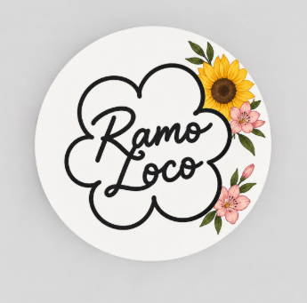

Calidad
Elegimos flores y materiales considerando su frescura, armonía y presentación.

Ramo Loco FLORES CON AMOR · GUATEMALASomos una floristería que cree en el poder de un gesto sincero y en la magia de regalar algo hecho con intención.

En Flora Serena, cada arreglo es una oportunidad para decir “estoy pensando en ti”, celebrar un logro, acompañar una etapa o simplemente alegrar un día común.
Nos inspiran las flores de temporada, las combinaciones equilibradas y las historias personales que hay detrás de cada pedido. Por eso escuchamos, orientamos y cuidamos la presentación de cada detalle.
Descubre nuestros arreglos →Elegimos flores y materiales considerando su frescura, armonía y presentación.
Escuchamos tus ideas y te ayudamos a encontrar un arreglo que tenga sentido.
Confirmamos precio, disponibilidad y entrega contigo antes de finalizar el pedido.
Nos encantará ayudarte a convertirla en flores.
Cuéntanos tu idea →